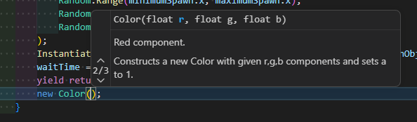

まず、rend (Renderer) の、material ってやつの、 color を変更してねってのが左辺。
new Color( ) は、色を変えるときのおまじない*1みたいなもので、とりあえずこれを書いておけばおっけー。
これから Color っていう言い方で赤色の要素を Random.value, 緑色の要素を Random.value, 青色の要素を Random.valueだけ含んだ色を持つよってのが右辺。
結論、Color()っていう関数が 赤色の要素、緑色の要素、青色の要素 っていう3つの数字*3*4を欲しがってるから。
ちなみにColor() は、説明を見る(関数にマウスカーソルをあわせる)と、こんな感じのが載ってる

※画像1 (タップで拡大)
これを翻訳してみると、
となり、3つの数字と a を定義*4していることがわかる。
rend.material.color = new Color(Random.value, Random.value, Random.value);は、ランダムな色を設定するコード。
そして "ランダムな色" を赤色の要素をランダムに、緑色の要素をランダムに、青色の要素をランダムに決めてるから3回連続でRandom.valueって書いてるってこと。